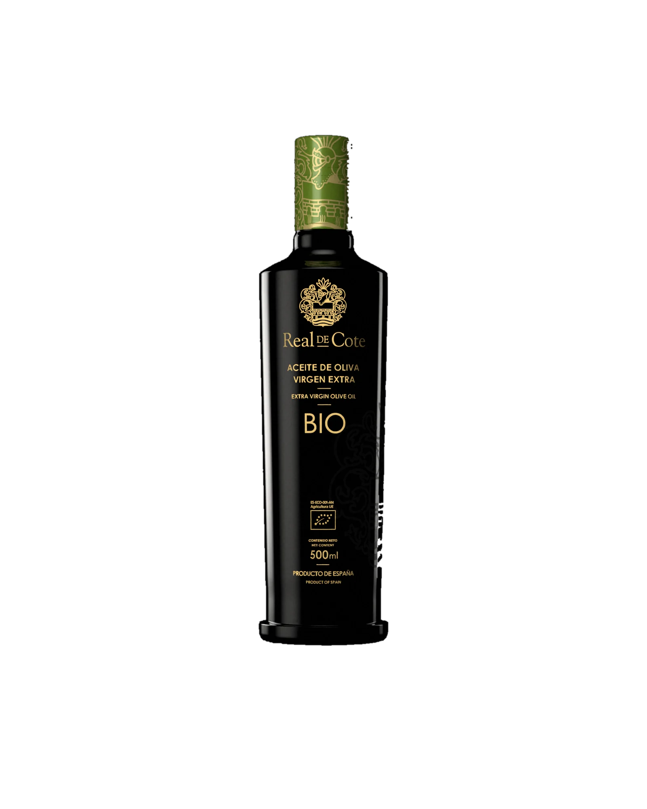
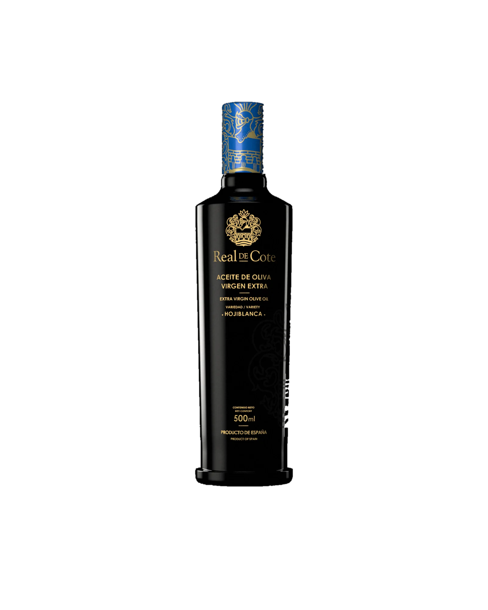
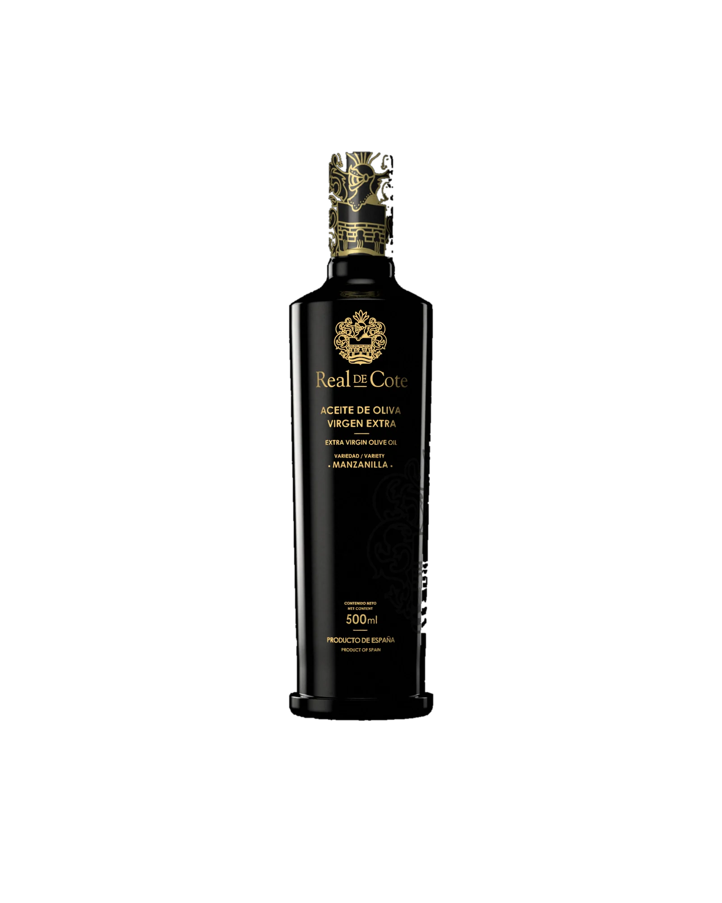
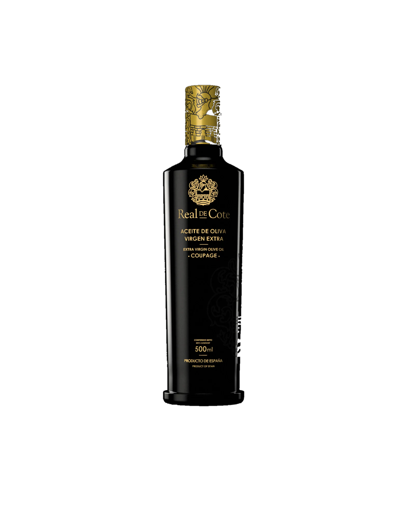

Aceite de oliva virgen extra
Coupage, Manzanilla, Arbequina, Hojiblanca y BIO, todos sin filtrar, en 500 ml y 250 ml.
Un aceite para terminar el plato, no para esconderlo.
Al sur de la provincia, donde la campiña se encuentra con la sierra. Cerca del pueblo, el castillo de Cote se alza entre colinas de olivar.



